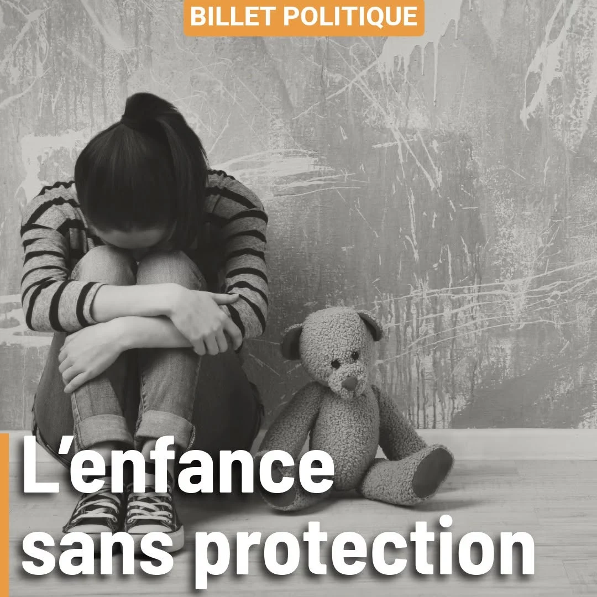

Publication relayée par le PCF 79
L’enfance sans protection, par Fabien Gay
Date de mise à jour indiquée par Facebook · 3 février 2026
Texte de la publication · Fabien Gay
L’enfance sans protection
À l’heure où les jeunes enfants et les adolescents subissent de plein fouet les fractures sociales, économiques, numériques et scolaires de notre société, la République semble avoir déserté l’un de ses devoirs les plus élémentaires : protéger les plus vulnérables.
Les alertes s’accumulent : explosion des troubles psychiques, pauvreté infantile, violences intrafamiliales et harcèlement scolaire devenu un fléau massif poussant certains élèves au suicide.
Il y a un an, les révélations autour du scandale de Bétharram venaient, une fois encore rappeler à quel point les violences faites aux enfants peuvent prospérer dans le silence, l’omerta et la défaillance des institutions, censées les protéger. Ce drame n’est pas un accident : il est le symptôme d’un système qui peine à croire les enfants, à contrôler les structures éducatives, et à se doter de contre-pouvoirs indépendants capables d’agir. Bétharram va fermer mais combien en existe-t-il d’autres ?
La proposition du ministre Edouard Geffray de nommer un défenseur des droits des enfants au sein de l’Education Nationale, ne répond pas, selon les associations de protection de l’enfance, aux problèmes de violences sexuelles. C’est de moyens supplémentaires pour l’existant dont elles ont besoin ! Cela suppose une volonté politique claire avec notamment un défenseur des droits des enfants pleinement reconnu, doté de moyens, capable d’interpeller l’État quand il faillit à sa mission.
Mais toujours inspiré par son austérité budgétaire imposée par 49.3 et au lieu de moyens financiers et humains, le gouvernement s’agite et brandit des réponses technologiques et sécuritaires, à commencer par le projet de loi visant à interdire ou restreindre l’accès aux réseaux sociaux aux moins de 15 ans. L’intention affichée est louable : protéger les enfants des violences en ligne, de l’addiction, de la haine. Mais la mise en œuvre interroge et pose des questions notamment éthiques. Le contrôle de l’âge par vérification de l’identité ouvre une brèche inquiétante. Faut-il habituer nos enfants, dès le plus jeune âge, à livrer leurs données personnelles pour exister dans l’espace numérique ? Faut-il normaliser une surveillance généralisée, au risque d’atteintes graves à la vie privée, sans garantie réelle d’efficacité ? Derrière le discours de protection, c’est une logique de contrôle qui s’installe, souvent déléguée à des plateformes privées dont les intérêts sont tout sauf ceux de l’enfance.
Protéger les enfants ne peut pas se résumer à des barrières d’âge mal sécurisées ou à des dispositifs techniques contournables. Cela exige des moyens humains, de l’éducation, de la prévention, de la présence adulte. Cela exige surtout de prendre au sérieux la parole des enfants. Mais à l’heure où la tendance ‘’no-kids’’ se développe jusqu’à aller vouloir interdire à des familles de voyager en train, le chemin semble être pris à l’envers. Les enfants sont vus comme une catégorie indésirable, qui dérange et que l’on pourrait exclure de l’espace public, d’un service public. Nous refusons cette vision excluante, égoïste et consumériste, de repli sous soi où le brassage social n’existerait plus.
Là encore, la réponse ne peut être uniquement punitive ou technologique. Il n’est pas acceptable de considérer les enfants comme des problèmes à gérer ou des risques à contrôler. Ils et elles sont des sujets de droits à part entière, des citoyens en construction.
En laissant l’enfance sans véritable protection, en préférant le contrôle à l’émancipation, nous prenons un risque immense : celui de fabriquer une génération méfiante, fragilisée, et convaincue que la République n’était pas au rendez-vous quand elle en avait le plus besoin.

Sources
Fabien Gay · publication relayée par le PCF 79 · bibliothèque Facebook · AR-0002-FB-00879
À lire aussi · Tandem Éducadis. Le privé lucratif n’a pas sa place dans la protection de l’enfance